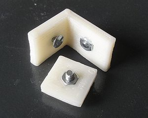
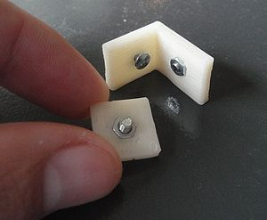
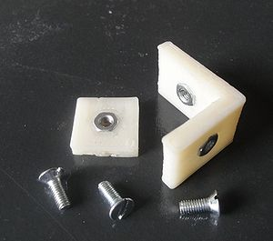
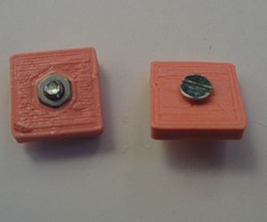
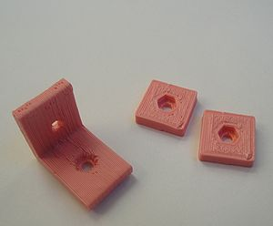
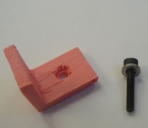
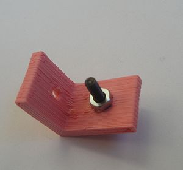
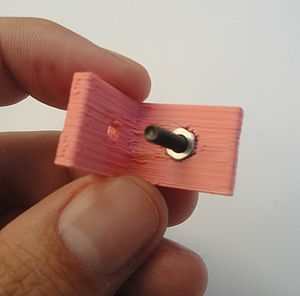
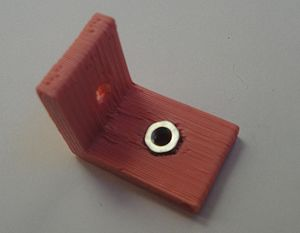

Dos piezas de prueba con tuercas empotradas (click para ampliar)
Contenido
[ocultar]Introducción
Piezas de prueba para comprar la viabilidad de empotrar tuercas. El resultado es muy satisfactorio. Se han creado dos piezas diferentes en las que el hueco de la tuerca se imprime horizonal y verticalmente. En el primer caso el hueco es perfecto. En el segundo la calidad es peor pero funciona bien.
Las piezas con tuercas empotradas son muy útiles para montar fácilmente objetos con varias piezas que van a atornilladas. En mi caso lo uso para montar robots.
Información
| Dimensiones | Pieza plana: Cuadrado de 15mm de lado. Pieza en L: 24x20x4 mm |
| Material | ABS (Acrilonitrilo Butadieno Estireno) Es el mismo plástico de las piezas de Lego |
| Tiempo de impresión |
Descarga
Versión 1.0
| OpenScad | STL | GCODE | Descripción |
|---|---|---|---|
| flat-piece.scad | flat-piece.stl | flat-piece.gcode | Pieza plana con tuerca empotrada |
| L-piece.scad | L-piece.stl | L-piece.gcode | Pieza en L con dos tuercas empotradas |
- Versión inicial
- Diseñada con OpenScad
- Gcode generado con: Replicatorg 0022 (perfil SF31-cupcake-acrylic-platform-ABS (modificado), skeinforge 031)
Fotos
|  Piezas de prueba con las tuercas empotradas y los tornillos colocados (click para ampliar) |
 Piezas de prueba, sin los tornillos (click para ampliar) |


|  Vistas superior e inferior (click para ampliar) |
 Piezas sin las tuercas colocadas (click para ampliar) |


Repositorio
- Repositorio SVN: http://svn.iearobotics.com/3D_objects/captive-nut-test/
Para obtener la última versión teclear:
svn co http://svn.iearobotics.com/3D_objects/captive-nut-test/v1.0/
Montaje
Para dejar las tuercas empotradas y que no se salgan, hay que seguir los siguientes pasos:
|  Inicio: Pieza + tornillo M3 largo (16mm) + tuerca (click para ampliar) |
 Paso 1: Intertar el tornillo largo y colocar una tuerca. Enroscarla hasta que esté a la altura de la pieza, y con la orientación correcta (click para ampliar) |


|  Paso 2: Apretar el tornillo para que la tuerca entre en su hueco (click para ampliar) |
 Final: Sacar el tornillo. La tuerca permanecerá empotrada y no se caerá (click para ampliar) |


Enlaces
Autor
Licencia
| |
Noticias
- 29/Dic/2010: Publicada versión 1.0 de las piezas (Blog)
- 19/Dic/2010: Comenzada esta página